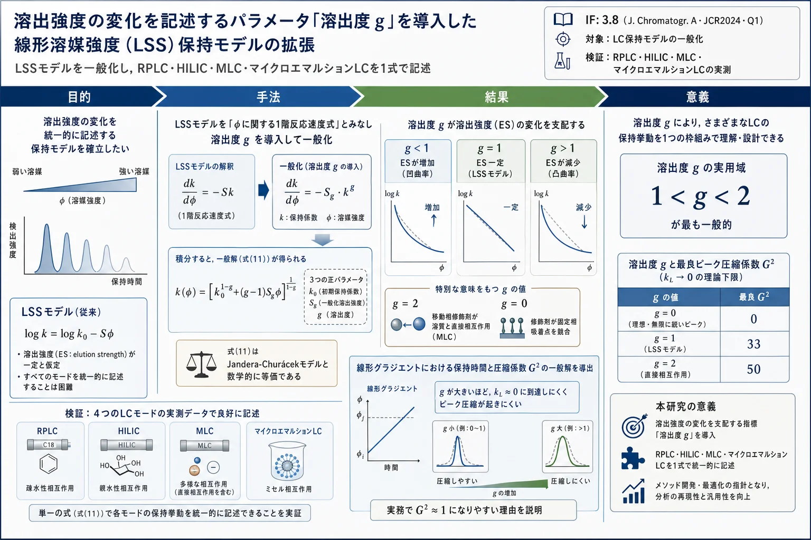

溶出強度の変化を記述するパラメータ「溶出度 g」を導入した線形溶媒強度（LSS）保持モデルの拡張

<!-- Baeza-Baeza JJ, García-Alvarez-Coque MC. Extension of the linear solvent strength retention model including a parameter that describes the elution strength changes in liquid chromatography. J Chromatogr A 1615 (2020) 460757. doi:10.1016/j.chroma.2019.460757 の全訳密度日本語版。 -->
補足（本サイトでの位置づけ）: 本論文は生薬研究ではないが、当サイトが扱う生薬・漢方の HPLC/UPLC・HILIC 指紋分析やメソッド開発の理論的土台である「保持モデル」を一段一般化した理論研究である。直前に扱った Snyder-Dolan-Gant 1979（LSS 理論の原典）や DryLab、den Uijl らの保持モデリング総説の延長線上にあり、「LSS・二次・吸着（J-C）・ミセル（Armstrong）の各モデルは、実は1つの一般式の特別な場合である」ことを1つのパラメータ g（溶出度） で統一的に示す。とくに生薬の極性成分分析で重要な HILIC や、界面活性剤を使う ミセル LC（MLC） も同じ枠組みで扱える点、そしてグラジエント溶出のピーク圧縮（実務で理論ほど鋭くならない理由）を g で説明する点が、生薬多成分グラジエント分離のメソッド設計に効く。数式が多く専門性は高いが、「なぜ広い組成範囲だと ln k–φ が曲がるのか」「どのモデルをいつ選ぶか」を根本から理解するための文献。
書誌情報
- 原題: Extension of the linear solvent strength retention model including a parameter that describes the elution strength changes in liquid chromatography
- 和題（本稿）: 溶出強度の変化を記述するパラメータを導入した線形溶媒強度（LSS）保持モデルの拡張
- 著者: J. J. Baeza-Baeza（責任著者）, M. C. García-Alvarez-Coque
- 所属: バレンシア大学 分析化学科（Departament de Química Analítica, Universitat de València, Burjassot, スペイン）
- 責任著者: J. J. Baeza-Baeza（Juan.Baeza@uv.es）
- 掲載誌: Journal of Chromatography A 1615 (2020) 460757
- DOI: 10.1016/j.chroma.2019.460757
- 受理経緯: 2019年9月11日受付 / 2019年11月21日改訂受付 / 2019年11月29日受理 / 2019年11月30日オンライン公開
- © 2019 Elsevier B.V.
- キーワード: 保持の記述／一般モデル／溶出強度／グラジエント溶出／圧縮係数
- 雑誌インパクトファクター: 3.8（Journal of Chromatography A・JCR2024・Q1）
要旨（Abstract）
移動相組成に基づく液体クロマトグラフィー（LC）の溶質保持挙動のモデル化は、クロマトグラフィー実務で一般的な作業である。LC の発展とともに、保持機構の理解を助け、とくに最適化目的で保持時間を予測するための複数のモデルが提案されてきた。順相（NPLC）・逆相（RPLC）・親水性相互作用（HILIC）・ミセル（MLC）など、異なる LC モードには特定のモデルが用いられる。
本研究では、修飾剤濃度に伴う溶出強度の変化の仕方を特徴づけるパラメータ（溶出度, elution degree, g）を含む一般式を提案する。溶出度は、系が線形溶媒強度（LSS）モデル（溶出強度が一定）に従うとき g = 1 の値をとる。g > 1 では溶出強度が減少し、g < 1 では修飾剤濃度とともに増加する。提案式を RPLC・HILIC・MLC・マイクロエマルション LC のいくつかのクロマトグラフィー系で得た実測保持データに適用した。1 < g < 2 の範囲が最も一般的であることが判明した。等溶媒・グラジエント溶出について提案式の一般挙動を検討した。グラジエント溶出におけるクロマトグラフィーピークの圧縮係数を計算する一般式も導いた。g 値が増加すると保持因子を0に近づけにくくなる（修飾剤濃度が増すと溶出強度が減少するため）ことを示す。このため、g 値が大きいほど有意なピーク圧縮の達成は難しい。対照的に、g < 1 の溶出モードは修飾剤濃度とともに溶出強度が増加し、有意なピーク圧縮を生じる。
1. 序論（Introduction）
移動相組成に基づく保持のモデル化はクロマトグラフィー実務で一般的な作業である[1–9]。最適な分離条件を見出すため、保持の正確な記述は LC で極めて重要である。Poole[10]によれば、保持を記述する単純な保持モデルの提案は失敗してきた。LC の溶媒和固定相は構造が不均一で吸着点が豊富かつ立体的に制御されており、化合物ごとに保持機構が分配から吸着まで変わり[11–17]、混合保持機構が一般的で、混合機構の確率のため多様な化合物に適用できる共通の相比が存在しないためである。
RPLC で分配が保持機構を支配する場合、有機修飾剤濃度 φ（通常は体積分率）に伴う溶質保持の変化を記述するのに 線形溶媒強度（LSS）モデル[2, 18]がよく使われる：
$$ \ln k = \ln\frac{t_R - t_0}{t_0} = \ln k_0 - S\varphi \tag{1} $$
tR・t0＝分析対象と非保持化合物（死時間）の保持時間、k0＝水（φ=0、RPLC で最弱の溶出強度）での保持因子の外挿値、S＝溶出溶質に対する修飾剤の溶出強度を記述し、LSS モデルでは一定（溶媒強度パラメータ）[18, 19]。2パラメータのみで、単純で扱いやすく、グラジエント圧縮係数[20]など各種パラメータの解析式が得られるため、等溶媒・グラジエントの両モードで広く使われてきた。
式(1)の主な欠点は、狭い有機修飾剤範囲でしか有効でないこと。広範囲では、修飾剤濃度に伴う溶出強度の変化により ln k 対 φ が曲率を示す。したがって、線形モデルにパラメータを追加して保持挙動をモデル化せねばならない。この曲率に対処する式が複数提案されている[4, 6–8, 21–25]。LSS モデルの直接的拡張である 対数二次モデル は最も頻用される：
$$ \ln k = \ln k_0 - b\varphi + a\varphi^2 \tag{2} $$
溶質・移動相・固定相の極性を考慮した3パラメータの別モデル[26, 27]：
$$ \ln k = \ln k_0 - \frac{b\varphi}{1 + c\varphi} \tag{3} $$
式(3)の簡略化では、アセトニトリル-水で c=1.42、メタノール-水で c=0.47 とする[7]。
吸着が主機構（NPLC）と仮定する場合[3, 11, 25, 28–31]：
$$ k = b\varphi^{-n} \tag{4} $$
$$ k = (a + b\varphi)^{-n} \tag{5} $$
a・b・n はモデルパラメータ。3パラメータの式(5)は Jandera-Churácek（J-C）モデル[30]と呼ばれ、Jandera らが Snyder の NPLC 吸着機構の理論的基礎から提案した[28]。ただし多様なモードで成功裏に適用され、RPLC の等溶媒・グラジエント保持予測でも非常に良い性能を示す[32, 33]。式(5)は LSS モデルより広い修飾剤範囲で正確で、広い修飾剤濃度が必要なグラジエント溶出に適する。解析的に積分でき、初期修飾剤濃度・グラジエント勾配の関数としてグラジエント溶出を記述する明示式が得られる。
ミセル液体クロマトグラフィー（MLC）の溶出を記述する保持モデルは、n=1 の式(5)に類似[4]：
$$ k = (a + b\mu)^{-1} \tag{6} $$
μ は移動相中の界面活性剤モノマー濃度。混合保持機構にはより複雑なモデルが提案され、主に HILIC 保持予測に適用される[25, 31, 34]。
本研究では、LSS モデルから出発し、保持挙動とともに変化して溶出強度に影響する 溶出度 g を得る一般式を導く。新式は LSS モデルの拡張で、g が1に近づくと LSS 挙動（ln k 対修飾剤濃度が線形）を再現する。他の g 値は正（g>1、凹）または負（g<1、凸）の曲率を記述する。したがって g は曲率パラメータとみなせる。提案式は適切な変換で J-C モデルと一致する。圧縮係数の一般式も導く。
2. 理論（Theory）
2.1. LSS モデルの一般化
LSS モデル（式1）は、保持因子の減少を示す1階反応速度式（ただし変数は時間でなく φ）と数学的に形式的な類似をもつ。式(1)を微分すると1階微分方程式が得られる：
$$ \frac{dk}{d\varphi} = -Sk \tag{7} $$
式(7)にパラメータ g を加えて拡張できる：
$$ \frac{dk}{d\varphi} = -S_g k^g \tag{8} $$
Sg は定数で、修飾剤濃度増加に伴う k の変化率を定量し、g が1に近づくと S（古典的溶媒強度パラメータ）に等しくなる（式7）。式(8)を積分すると：
$$ \int_{k_0}^{k}\frac{dk}{k^g} = -\int_0^\varphi S_g\,d\varphi \tag{9} $$
$$ \frac{k^{1-g} - k_0^{1-g}}{1-g} = -S_g\varphi \tag{10} $$
最終的に（補足資料 S.1）：
$$ k = \frac{k_0}{\left[1 + (g-1)k_0^{g-1}S_g\varphi\right]^{1/(g-1)}} \tag{11} $$
異なる基礎から導かれたが、式(11)は次の変換のもとで式(5)と一致する（補足 S.2）：
$$ a = k_0^{1-g} \tag{12} $$
$$ b = (g-1)S_g \tag{13} $$
$$ n = \frac{1}{g-1} \tag{14} $$
式(11)は式(5)と同様に異なるクロマトグラフィーモードの一般モデルとして使え、濃度変数 φ は各モードで意味が変わる（有機溶媒＝RPLC、水＝HILIC、界面活性剤ミセル＝MLC など）。
g が1に近づく（式5の n が無限大に近づく）と、式(11)は LSS モデル（純粋な分配保持機構を記述と仮定）に近づく。e の性質を用いて：
$$ e^{-S_g\varphi} = \lim_{g\to 1}\left[1 + (g-1)k_0^{g-1}S_g\varphi\right]^{-1/(g-1)} \tag{15} $$
したがって、LSS モデルは n が無限大に近づく J-C モデル（式5）の特別な場合とみなせる。
式(11)は式(5)に対し、3つの正パラメータ——k0（φ=0 での保持因子）、Sg（k 減少率を示す溶出強度）、g（ln k 対 φ 関数の曲率の型に関連する新パラメータ）——で保持を記述する利点をもつ。また式(11)は有限の g 値で LSS モデルと一致する。一方、式(5)では強く保持される溶質で a が0に近づき、実測データの当てはめで負値をとりうる（無意味）。n は無限大に近づくと LSS に近づく広い範囲で変わり、g=0〜2 の範囲で n は −1 から +1 へ無限大を経由する不連続変数となる。したがって式(11)の適用はより直接的で、パラメータ（k0・Sg・g）の意味がより明確である。
パラメータ g は溶出強度が修飾剤濃度に伴って変わる仕方を特徴づける。g を 「溶出度（elution degree）」 と呼ぶ。
2.2. 特定の保持機構における g パラメータ
ln k 対移動相組成のプロットは、溶質が経験する保持機構に応じて異なる曲率を示す。g はこの曲率を測る（幾何学的パラメータ）。ただし LC の相互作用の複雑さ[17]から、g 値が特定の保持機構について明確な情報を与えるとは期待できない。しかし、非常に特殊な（ほぼ理想的な）場合には g 値を保持機構に関係づけられる。
2.2.1. 移動相修飾剤が溶質と直接相互作用（g = 2）
分析対象 A の保持が固定相 S への吸着のみによる場合：A + S ⇄ AS（式16）。Langmuir 等温式に従い（固定相が飽和から遠いとき qA·nA<<1）、nAS = qA·nS°·nA = k0·nA（式18）。固定相が飽和から遠ければ、保持は分配平衡としても説明できる。Vailaya と Horváth[12]によれば、RPLC の非極性溶質での分配と吸着の区別は熱力学解析からは明らかでない。
修飾剤が分析対象と相互作用する場合、A + M ⇄ AM（式19）を仮定し、nAM = ω·KAM·nA·φ（式20、ω は変換定数）。保持因子は：
$$ k = \frac{n_{AS}}{n_A + n_{AM}} = \frac{k_0}{1 + \omega K_{AM}\varphi} \tag{21} $$
これは g=2 の式(11)と形式的に同一。式(21)は MLC の保持記述に提案された[4]。
2.2.2. 修飾剤が固定相吸着点を巡って分析対象と競合（g = 0）
修飾剤 M が分析対象と直接相互作用せず、固定相吸着点を競合して分析対象を追い出す機構：M + S ⇄ MS（式22）。固定相が飽和から遠いとき、自由な吸着点 nS = nS° − qM·φ·nS°（式24）。分析対象は修飾剤に占められていない点のみで相互作用し：
$$ k = \frac{n_{AS}}{n_A} = k_0 - k_0 q_M\varphi \tag{26} $$
これは g=0 の式(11)と一致。
2.2.3. 飽和から遠い分配または吸着（g = 1）
g=1（LSS モデル）では挙動が異なり、修飾剤が各化学種の活量に影響する分配モデルとして記述される[35]。ln K = −(μs°(A) − μm°(A))/RT（式27）。修飾剤の効果が両相で線形と仮定すると、最終的に k = K·φ を考慮して式(1)が得られる。式(21)(26)は式(11)の特別形で、修飾剤の影響を指数 n で重み付けし、相互作用定数 KAM・qM は n に反比例する（式30–33）。重み因子 n が無限大に近づくと副反応（式19, 22）の定数が0に近づき、両モデルは LSS モデルに収束する（式34, 35）。
2.3. グラジエント溶出
グラジエント溶出の理論は複数の著者が記述してきた[21, 36]。複数の保持モデルで問題となるのは、グラジエント溶出の基本方程式の解析積分が不可能なこと：
$$ \int_0^L\frac{dl}{u} = t_0 = \int_0^{t_L - t_0}\frac{dt_c}{k(\varphi(t_c))} \tag{36} $$
t0＝死時間、tL＝グラジエント条件下での溶質の保持時間、tc＝補正時間。LSS モデルがグラジエント保持予測に広く使われる理由の一つは容易に積分できること。式(11)も式(36)の解析解を許す。積分のため、式(11)をグラジエント開始時（φ=φs）の保持因子 ks の関数として表す：
$$ k = \frac{k_s}{\left[1 + (g-1)k_s^{g-1}S_g(\varphi-\varphi_s)\right]^{1/(g-1)}} \tag{37} $$
g と Sg は原点を φ=0 から φ=φs に移しても不変。傾き m の線形グラジエント φ=φs+m·tc（式38）を式(36)に代入して積分すると（補足 S.3）、保持時間：
$$ t_L = \frac{(1 + g k_s^g S_g m t_0)^{(g-1)/g} - 1}{(g-1)k_s^{g-1}S_g m} + t_0 \tag{41} $$
グラジエント勾配の増加に伴う保持因子の減少に加え、ピーク幅も比例的に減少する。Jandera の近似[37]では、グラジエント溶出のピーク幅は、溶質がグラジエント中にカラムを離れる瞬間の組成で等溶媒的に移動した場合とほぼ同じ。ただし、ピーク圧縮（peak compression） と呼ばれる副次効果があり、これはより強い移動相中で試料バンドの後部が前部に対して移動する効果を特徴づける[20]。パラメータ g はピーク圧縮係数の解釈に新しい洞察を与えうる。
圧縮係数は伝統的に LSS モデルに基づいて評価される[20]。式(11)に基づくより一般的な式が得られる。文献[20]の式(25)に基づき、カラム出口（l=L）でのピーク分散を積分し、圧縮係数を計算する（式42–44）。kl を得るため式(11)(41)を考慮し（補足 S.4）：
$$ k_l = \frac{k_s}{\left(1 + g k_s^g S_g m \frac{l}{u}\right)^{1/g}} \tag{45} $$
変数変換（式47, 48）を経て積分すると、最終的に圧縮係数の一般式（式52）：
$$ G^2 = \frac{1 + \frac{2g}{g+1}\frac{k_L^{-g-1}-k_s^{-g-1}}{k_L^{-g}-k_s^{-g}} + \frac{g}{g+2}\frac{k_L^{-g-2}-k_s^{-g-2}}{k_L^{-g}-k_s^{-g}}}{(1+k_L^{-1})^2} \tag{52} $$
g=1 のとき、式(52)は LSS モデルの圧縮係数式[20, 38–40]に一致する（式53）。ks が十分大きいと式(52)は式(54)に、kL が0に近づくと最小 G² 値（式55）：
$$ G^2 = \frac{g}{g+2} \tag{55} $$
したがって、g=1（LSS）で最良 G²=1/3、g=2 で G²=1/2。g が増えると最適圧縮係数が増加し、大きな g で G²→1 に近づく。すなわちグラジエント性能は g<1 で改善し、g=0 では溶出ピークが理論上無限に狭くなる理想状況となる。逆に十分大きな g では圧縮効果は無視でき G²→1 となる。
3. 実験（Experimental）
複数の溶質・カラム・有機修飾剤範囲で、いくつかのクロマトグラフィーモード（Tables 1–5）で得た保持データに手法を適用した。一部は著者らのデータベース、他は文献から。検討したモード：
- (i) RPLC: 4スルホンアミド（Chromolith Speed ROD C18、5–40% アセトニトリル）、3利尿薬（フロセミド・キサパミド・エタクリン酸、Spherisorb ODS-2・Zorbax Eclipse XDB-C18、28–58% アセトニトリル）。Spherisorb では26本のグラジエントラン（初期アセトニトリル22–52%、勾配0.2–1.33%/min）も使用。フロセミドは Zorbax C8・ACE-5-phenyl でも溶出。文献[13, 15, 22]も使用。
- (ii) HILIC: 3ヌクレオシド（シチジン・グアノシン・アデノシン、diol/silica/type B-amino/双性イオン ACE カラム、10–45% 水 in アセトニトリル）。文献[34]も使用。
- (iii) 純 MLC: 4スルホンアミド＋3フラボノイド（フィセチン・ケルセチン・クリシン）、Zorbax Eclipse XDB-C18、0.01–0.05 M Brij-35。
- (iv) ハイブリッド MLC: 同溶質、10 mM Brij-35＋0–50% アセトニトリル。
- (v) マイクロエマルション LC: 3β遮断薬（メトプロロール・オキシプレノロール・プロプラノロール）＋2パラベン、X-Terra-C18、SDS/オクタン/ブタノール系。
4. 結果と考察（Results and discussion）
4.1. 溶出度パラメータに基づく溶出強度の計算
溶出強度（ES）は式(56)で計算：
$$ ES = -\frac{d\ln k}{d\varphi} = -\frac{1}{k}\frac{dk}{d\varphi} = S_g k^{g-1} = \frac{S_g k_0^{g-1}}{1 + (g-1)k_0^{g-1}S_g\varphi} \tag{56} $$
g=1 の溶出強度は LSS モデルの慣用 S パラメータ（S1）に等しい。Sg は溶出度 g に強く依存する定数。φ=0 では ES0 = Sg·k0^(g-1)。原著 Fig. 1 は、同じ ES0 で異なる g 値の保持因子（k、ln k）と溶出強度の φ 依存を示す。g=0 で k は線形、g=1 で ln k が線形、g>1 で ln k の曲率が正（凸）、g<1 で負（凹）。溶出強度は g=1 で一定、g<1 で増加、g>1 で減少（式56の分母が g>1 で φ とともに増加、g<1 で減少）。溶出度 g が高い手法では、適切な保持時間を得るのに溶出強度の大きい修飾剤が必要になる。
4.2. グラジエント溶出における保持と圧縮係数
線形グラジエントを仮定し、溶出度のグラジエント溶出への影響を検討。カラム内位置 l での溶質の瞬間等溶媒保持因子 kl（式45, 57）。溶質の保持因子 k は溶質が溶出中に経験する kl の平均値（式58）。カラム出口の瞬間保持因子 kL がグラジエント溶出の全体保持とピーク幅を支配する[32]。小さな k・最小ピーク幅を得るには kL を可能な限り小さくすべき。
圧縮係数 G²（式52）は、原著 Fig. 3 で g・kL の関数として示される。G² は kL とともに増加し、kL→0 で g の効果が非常に大きい。g と kL が増えると G²→1（圧縮効果なし）。有意な圧縮係数は低い kL でのみ可能で、高い g の手法では kL を小さくするのが難しい。実務では g>1 が多いため G² は1に近くなりがち。
4.3. 多様な実験系での溶出度の検討
Tables 1–5 のフィッティング結果。原点を最小修飾剤濃度の点に移す式(37)で当てはめ精度を改善。溶出度の平均値: RPLC 1.26±0.24（Table 1）、HILIC 1.66±0.19（Table 2）、界面活性剤濃度を変えた MLC 2.15±0.30（Table 3）、オクタン濃度を変えたマイクロエマルション LC 2.53±0.26（Table 5）。RPLC の Chromolith では溶質保持因子の減少とともに g が明確に増加（溶質が死時間に近いと溶出強度が減少）。同一化合物・カラム・溶媒で等溶媒とグラジエントの g 値が類似する点が興味深い。有機溶媒を変えた MLC（Table 4）・マイクロエマルション LC（Table 5）では低い値（0.78±0.27、1.22±0.21）。アセトニトリル含量を変えたハイブリッド MLC（Table 4）では g<1 が多く、これはアセトニトリル増加で固定相から界面活性剤が脱着し結合点が減るため溶出強度が修飾剤濃度とともに増加すると説明できる。
原著 Table 1（抜粋）：RPLC でのフィッティング（アセトニトリル修飾剤）
| カラム/プローブ化合物 | ln ks | Sg×10² | g | R² | Er(%) |
|---|---|---|---|---|---|
| Chromolith / スルファメラジン | 1.578 | 7.294 | 1.763 | 0.9997 | 1.54 |
| Chromolith / スルファクロロピリダジン | 2.767 | 7.634 | 1.385 | 0.99987 | 1.53 |
| Chromolith / スルフィソキサゾール | 3.499 | 9.149 | 1.259 | 0.9998 | 1.74 |
| Chromolith / スルファキノキサリン | 4.783 | 13.676 | 1.141 | 0.9998 | 1.28 |
| Spherisorb / フロセミド | 2.951 | 5.437 | 1.332 | 0.99998 | 0.31 |
| Zorbax / フロセミド | 2.394 | 6.460 | 1.286 | 0.999990 | 0.25 |
| Intersil ODS3 / トルエン | 5.476 | 8.859 | 0.981 | 0.99990 | 1.03 |
（ほぼ全系で R²>0.999、予測相対誤差 Er は多くが1%台以下と高精度。RPLC の g は概ね1.1〜1.8。）
原著 Table 3（抜粋）：純 MLC（Brij-35）
| プローブ化合物 | ln ks | Sg | g | R² | Er(%) |
|---|---|---|---|---|---|
| スルファメラジン | 1.763 | 1.496 | 2.778 | 0.99961 | 0.46 |
| スルフィソキサゾール | 3.500 | 1.882 | 2.106 | 0.99998 | 0.19 |
| フィセチン | 3.760 | 2.958 | 1.987 | 0.999998 | 0.08 |
| クリシン | 4.672 | 1.229 | 1.983 | 0.999997 | 0.10 |
（MLC では g がおおむね2前後＝式21〈g=2、修飾剤が溶質と直接相互作用〉に対応。）
5. 結論（Conclusions）
LC の保持を記述する複数のモデル（RPLC の LSS、NPLC の J-C、MLC の Armstrong）が、共通の一般モデルの形式的な現れであることを示した。通常 RPLC では、複雑な保持挙動や広い修飾剤範囲の保持を当てはめるのに LSS でなく対数二次モデルが選ばれる（LSS の論理的継続でパラメータ1つ多い）。ただし、保持因子は特定保持機構の個々の寄与の相対的貢献をまとめた複合項にすぎず、任意化合物の正しい寄与に分解できるモデルは存在しない。
LSS モデルに基づき、クロマトグラフィーモードによらず保持を説明する式を提案した。新式はパラメータ g（溶出度） を導入し、溶出挙動を普遍的に記述する。g は修飾剤濃度に伴う溶出強度の変化を制御し、g=1 で一定、g>1 で減少、g<1 で増加。特定分離で修飾剤範囲が大きく変わると曲率と g 値が変わりうる。より複雑な挙動にはより多いパラメータを含む複雑な式が要るが、Tables 1–5 のとおり提案モデルは大半で広い修飾剤範囲で正確である。
溶出度の効果を等溶媒・グラジエント溶出で検討した。式(11)に基づき、線形グラジエントの圧縮係数の一般式を初めて提案し、理論が予測するほどの有意な圧縮が実務で通常得られない理由を説明する興味深い結論を得た。g 値が大きいほど有意なピーク圧縮の達成が難しく、g の増加で G²→1 となり、修飾剤濃度増加で溶出強度が減るため kL を0に近づけにくい。
主要記号・モデル対応
- k＝保持因子、k0＝φ=0 での保持因子、ks＝グラジエント開始時（φ=φs）の保持因子、kl/kL＝カラム内位置 l／出口での瞬間等溶媒保持因子
- φ＝修飾剤濃度（体積分率）、S＝溶媒強度パラメータ（LSS）、Sg＝一般化溶出強度、g＝溶出度（elution degree）、ES＝溶出強度、G²＝圧縮係数、m＝グラジエント傾き、t0＝死時間
- モデル対応: g→1 で LSS モデル（式1）、式(11)⇔J-C モデル（式5、a=k0^(1-g)・b=(g-1)Sg・n=1/(g-1)）、g=2 で MLC 式（式21）、g=0 で競合吸着（式26）
主要参考文献（抜粋）
- [2] Valkó K, Snyder LR, Glajch JL. Retention in RPLC as a function of mobile-phase composition. J Chromatogr A 656 (1993) 501–520.
- [4] García-Alvarez-Coque MC, Torres-Lapasió JR, Baeza-Baeza JJ. Modelling of retention behaviour in MLC. J Chromatogr A 780 (1997) 129–148.
- [18] Snyder LR, Kirkland JJ, Dolan JW. Introduction to Modern Liquid Chromatography. Wiley, 2009.
- [19] Snyder LR, Dolan JW, Gant JR. Gradient elution in HPLC. 1. Theoretical basis for reversed-phase systems. J Chromatogr 165 (1979) 3–30.（LSS 理論の原典）
- [20] Poppe H, Paanakker J, Bronckhorst M. Peak width in solvent-programmed chromatography. J Chromatogr 204 (1981) 77–84.（圧縮係数）
- [23] Neue UD, Kuss HJ. Improved reversed-phase gradient retention modeling. J Chromatogr A 1217 (2010) 3794–3803.
- [28] Snyder LR. Role of the solvent in liquid-solid chromatography. Anal Chem 46 (1974) 1384–1393.
- [30] Jandera P, Hájek T, Růžičková M. Retention models on core-shell columns. J AOAC Int 100 (2017) 1636–1646.（J-C モデル）
- [35] Dorsey JG, Dill KA. The molecular mechanism of retention in RPLC. Chem Rev 89 (1989) 331–346.
- [38, 39] Gritti F, Guiochon G. Peak compression factor in gradient elution. J Chromatogr A 1178/1212 (2008).
（全43文献。詳細は原著参照。）